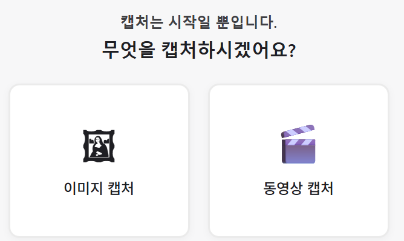

화면을 캡처하고, 주석 달고, 녹화까지.
이미지·GIF·동영상으로 즉시 저장하고 공유하세요. 빠르고 가벼운 Windows용 화면 캡처 도구.
직접 보세요
선택부터 캡처, 편집까지 — 실제 화면 그대로.



필요한 기능, 다 들어있습니다
캡처부터 주석, 녹화까지 — 별도 도구 없이 ClipShot 하나로.
빠른 캡처
영역·전체 화면·특정 창을 단축키 한 번으로. 멀티 모니터도 지원합니다.
Ctrl + Alt + C강력한 주석 편집
사각형·화살표·텍스트·번호·형광펜·모자이크. 캡처 직후 바로 편집하세요.
GIF · 동영상 녹화
영역 또는 전체 화면을 MP4·GIF로 녹화. 시스템 사운드까지 함께 담습니다.
Ctrl + Alt + R가볍고 빠름
Rust + Tauri 기반 네이티브 앱. 시스템 자원을 거의 쓰지 않고 즉시 실행됩니다.
한국어 · 영어
OS 언어를 자동 감지하고, 설정에서 한국어/영어를 직접 선택할 수 있습니다.
무료
Microsoft Store에서 무료로 받으세요. 광고도, 결제도 없습니다.
지금 시작하기
Windows 10/11에서 바로 설치할 수 있습니다.
Windows 10 (1809) 이상 · 64비트
검토 중 macOS 지원을 검토하고 있습니다.
현재 ClipShot은 Windows 10/11 전용입니다. macOS 지원은 검토 중입니다.